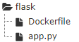

0x00 安装
0x01 基本命令
image
1 | # 拉取 |
container
1 |
|
Dockerfile
这里给出一个flask的小例子。
项目目录

app.py
1 | from flask import Flask |
Dockerfile
1 | FROM python:3 |
创建镜像与启动
1 | #首先把app.py Dockerfile文件一起放到一个文件夹下面 然后运行 |
某些变量
Volumn
想要了解Docker Volume，首先我们需要知道Docker的文件系统是如何工作的。
Docker镜像是由多个文件系统（只读层）叠加而成。当我们启动一个容器的时候，Docker会加载只读镜像层并在其上（译者注：镜像栈顶部）添加一个读写层。如果运行中的容器修改了现有的一个已经存在的文件，那该文件将会从读写层下面的只读层复制到读写层，该文件的只读版本仍然存在，只是已经被读写层中该文件的副本所隐藏。当删除Docker容器，并通过该镜像重新启动时，之前的更改将会丢失。在Docker中，只读层及在顶部的读写层的组合被称为Union File System（联合文件系统）。为了能够保存（持久化）数据以及共享容器间的数据，Docker提出了Volume的概念。简单来说，Volume就是目录或者文件，它可以绕过默认的联合文件系统，而以正常的文件或者目录的形式存在于宿主机上。
大概总结一下上面的内容，就是可以实现：存储数据和共享数据。
1 | #将宿主机当前目录的db目录 与 镜像中的 /data/db 做挂载 |
通过 VOLUME 指令创建的挂载点，无法指定主机上对应的目录，是自动生成的.语法为：1
2FROM ubuntu
VOLUME ["/data1","/data2"]
保存修改的容器
1 | docker commit 614122c0aabb aoct/apache2 |
0x02 注意
今天遇到遇到了一个有趣的事情，我在构建一个镜像的时候，Dockerfile如下：1
2
3
4
5FROM ubuntu
RUN apt-get update
RUN apt-get install python3
CMD /bin/bash
此时会报错退出，个人分析是因为在安装python3的过程中，需要用户的输入，导致docker中断。所以需要改成1
2
3
4
5FROM ubuntu
RUN apt-get update
RUN apt-get install -y python3
CMD /bin/bash
-y表示同意各种要求。